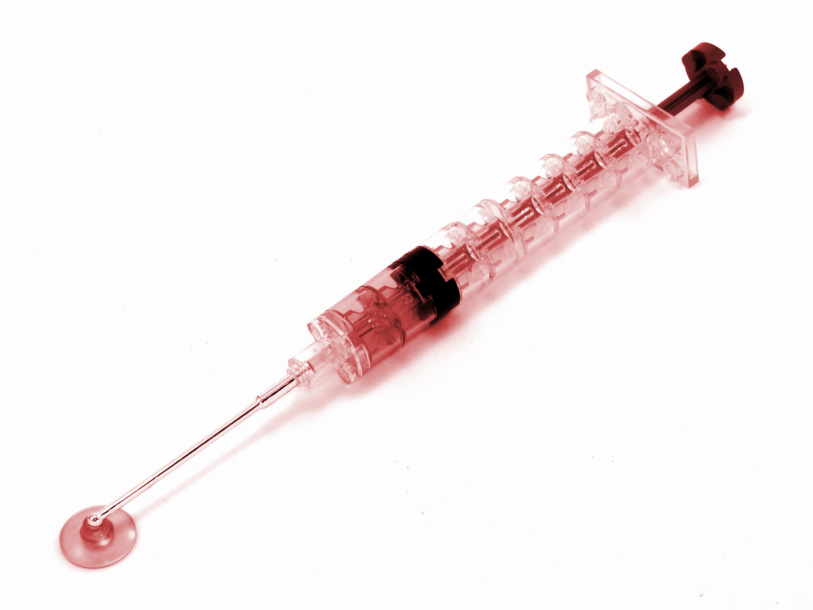
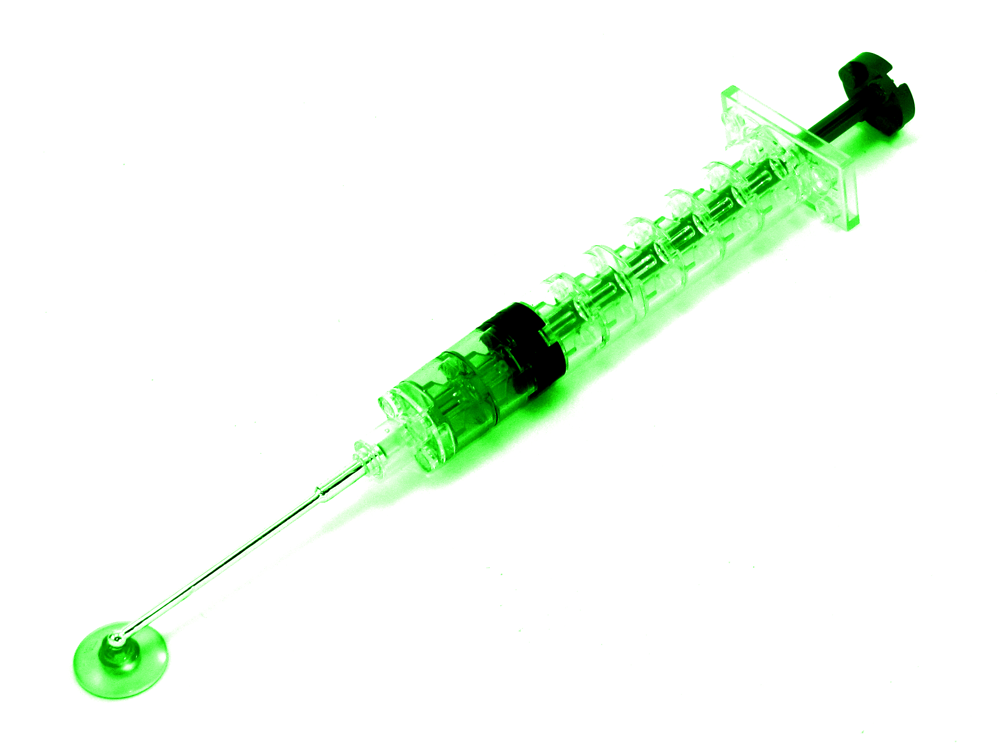
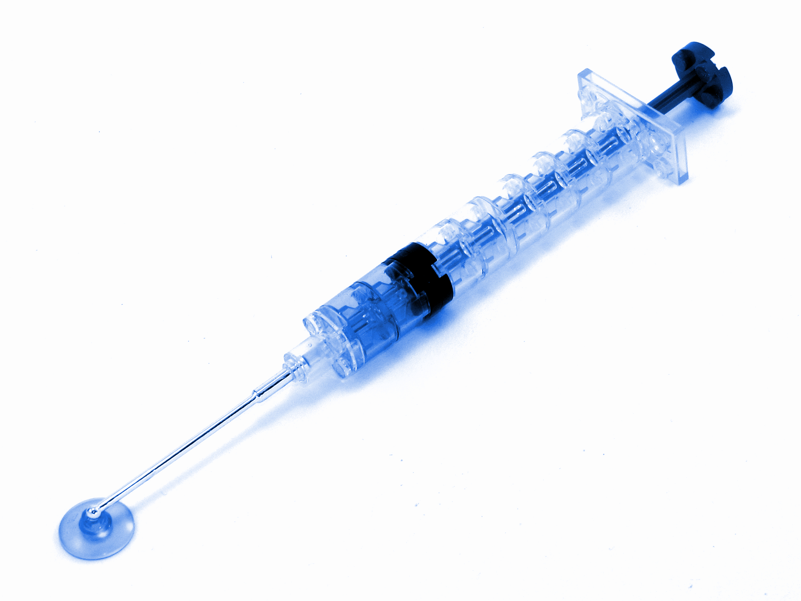

EFTMS
Electronic Fridge Temperature Monitoring System

Red Zone Fridge
Most Recent Reading:
- Target Temperature Range: 2–8 deg. C.
- Warning Threshold: 2.0 – 2.5 or 7.5 – 8.0 deg. C.
- Critical Temperatures: <2.0 deg.C or >8.0 deg.C.

Green Zone Fridge
OFFLINE
- Target Temperature Range: 2–8 deg. C.
- Warning Threshold: 2.0 – 2.5 or 7.5 – 8.0 deg. C.
- Critical Temperatures: <2.0 deg.C or >8.0 deg.C.

Blue Zone Fridge
OFFLINE
- Target Temperature Range: 2–8 deg. C.
- Warning Threshold: 2.0 – 2.5 or 7.5 – 8.0 deg. C.
- Critical Temperatures: <2.0 deg.C or >8.0 deg.C.